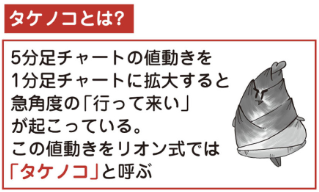

第１章では、自分の力だけで見つけ出した私自身の「成功までの道筋」を極力、初心者の方にも再現してもらえるよう、項目別に振り返りました。
FXで大事なこと、守らなくては生き残れないことなどを、あまり難しくならないように表現しています。
第２章では、FXトレードに必要なチャート分析の基本を注目アイテム別に紹介します。 FXの値動き分析には「これだけは知っておきたい」という基礎があります。
人々を豊かに幸せにしてくれる FX という「不思議な箱」をひっくり返して、サポートとレジスタンスの考え方、高値・安値、ローソク足、移動平均線、チャートパターンなど、基本となるバトルアイテムとそのアイテムを活用したトレード方法をゲームの攻略本風に解説します。
第３章では、リオンが勝率 7割、月間平均 200万円の利益を上げている「リオン式ゾソーントレード」を紹介します。 この部分が本書のメインコンテンツになります。
「コツコツ勝てて、時にドカンと勝てるリオン式」とはどんなものなのか？
リオン式 Zone トレードの構成と基礎を本書で体験して、是非ご自分のトレードのヒントにしてください。
第４章では、リオン式 Zone トレードのリアルトレードをチャート画像を使って紹介します。
初心者の方でも理解しやすい「 タケノコ 」、「リバースタッチ」、「移動平均線の集束・拡散」など、過去の成功例だけでなく、失敗例も掲載しました。
第５章では、リオン式 Zone トレードを、リオン大好き通貨ペア・ ポンドオージー（GBPAUD） 以外でも使うための注意点についてアイデアを出してみました。
以外でも使うための注意点についてアイデアを出してみました。
FXのメジャー通貨ペアといえば、 ドル円（USDJPY） や ユーロドル（EURUSD）
や ユーロドル（EURUSD） や ポンドドル（GBPUSD）
や ポンドドル（GBPUSD） 。
。
そんな人気通貨ペアでも、またショートではなくロングでも、リオン式 Zone トレードは通用します。 応用方法をリオンと考えてみましょう。
終章には、これまでのおさらいの意味も込めて、リオン式ゾプーントレードのノウハウを網羅[もうら]
망라したドリルを用意しました。
こちらを元にして、是非、動くリアルチャートをたくさん見てください。 リアルタイムの値動きを見る以上の練習はないんです。
ご自身の生活に支障のない範囲で、とにかくチャートを追ってください。
最後に付録として、リオンの YouTube 動画にも登場するリオン式 Zone トレードのキャラクター達の図鑑を掲載しました。
私は声優を仕事に選ぶくらい、アニメや漫画がとにかく好きです。 Vtuber としてデビューが決まった時、頭の中で思い描いていたキャラクター達をイラストレーターのミューラさんに実際に絵にして頂きました。
彼らは絶妙なタイミングで突っ込みを入れてくれたり、慰めて[なぐさめて]
위로하다くれたり、いつもリオンの心に寄り添ってくれます。 せっかくの機会なので、図鑑の形で、皆さんにご紹介させてくださいね。
それでは、リオン式 Zone トレード、ゆったり、スタートして行きましょう。
本書をお手に取って頂いた皆さんが、FX チャートから今までとは違うものが見えるようになり、ご自分に合った最高のトレードが出来ますように。
勝てなかった過去の私と、勝てるようになって自由な時間と収益を手に入れた今のリオンが、皆さんの夢の実現を精一杯サポートします。
 なぜ2年間全く勝てず拒食症[きょしょくしょう]
なぜ2年間全く勝てず拒食症[きょしょくしょう]